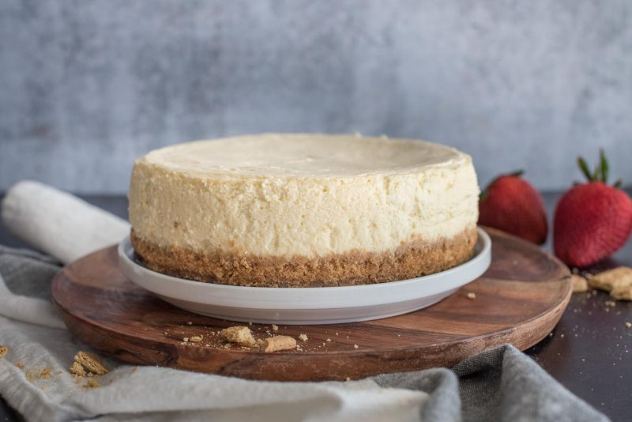

Cheesecake

This classic 8-inch cheesecake is a cherished family recipe that has delighted our gatherings for generations. With its rich, creamy filling and buttery graham cracker crust, this cheesecake is the perfect dessert for any occasion. Made with simple ingredients like cream cheese, sugar, and eggs, it's a testament to the beauty of traditional baking.
Each step in the process is crafted with care, from the preparation of the crumbly graham cracker crust to the gentle baking of the luscious cream cheese filling in a water bath. The result is a smooth, velvety cheesecake with a perfectly set center and a flavor that's both tangy and sweet.
Baking this cheesecake is a ritual in our family, often reserved for special occasions and holidays. The slow baking process ensures a moist, tender cake, while the cooling period allows the flavors to meld together beautifully. Serve this cheesecake chilled, and watch as it becomes the star of your dessert table, bringing joy and a sense of tradition to every bite.
Ingredients
-
3 (8 oz) packages of cream cheese (room temperature)
-
1 1/3 cups sugar
-
2 tablespoons flour
-
1 teaspoon vanilla extract
-
1/4 cup cream or sour cream
-
4 eggs
Instructions
- Prepare the Crust
- Preheat your oven to 350°F (175°C).
- Combine 1 cup of graham cracker crumbs with 4 tablespoons of melted butter.
- Pat the mixture into the bottom of an 8-inch springform pan.
- Bake for 7 minutes. Allow it to cool completely.
- Prepare the Filling
- Preheat your oven to 300°F (150°C).
- In a large mixing bowl, beat the cream cheese, sugar, and flour until smooth.
- Add the eggs one at a time evwery 30 seconds, beating well after each addition.
- Mix in the vanilla extract and cream (or sour cream).
- Pour the filling into the cooled crust.
- Prepare the Water Bath
- -Wrap the bottom and sides of the springform pan with heavy-duty aluminum foil to prevent water from seeping in.
- Place the springform pan in a larger roasting pan.
- Pour hot water into the roasting pan until it reaches halfway up the sides of the springform pan.
- Bake
- Bake the cheesecake at 300°F (150°C) for 90 minutes, or until the center is set.
- Check the water level occasionally and add more hot water if necessary.
- Cool
- Turn off the oven and let the cheesecake cool in the oven with the door slightly open for about an hour.
- Remove the cheesecake from the water bath and foil.
- Let it cool completely at room temperature, then refrigerate for at least 4 hours or overnight before serving.